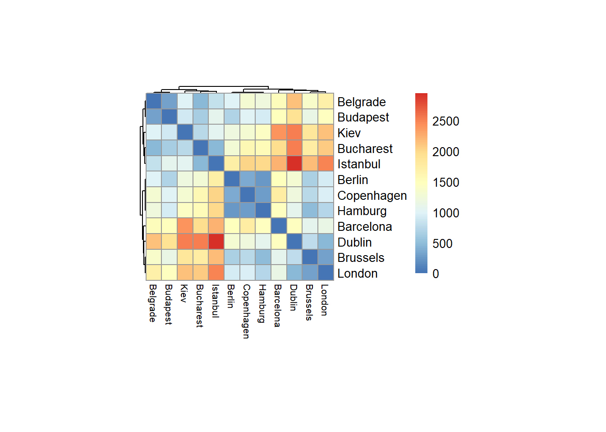
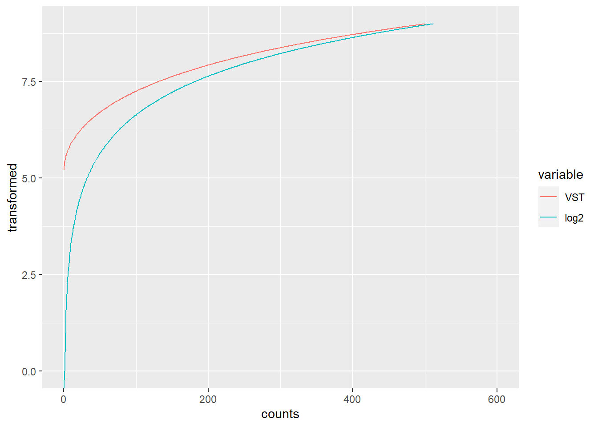
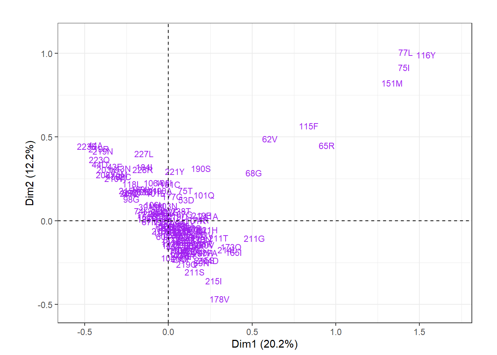
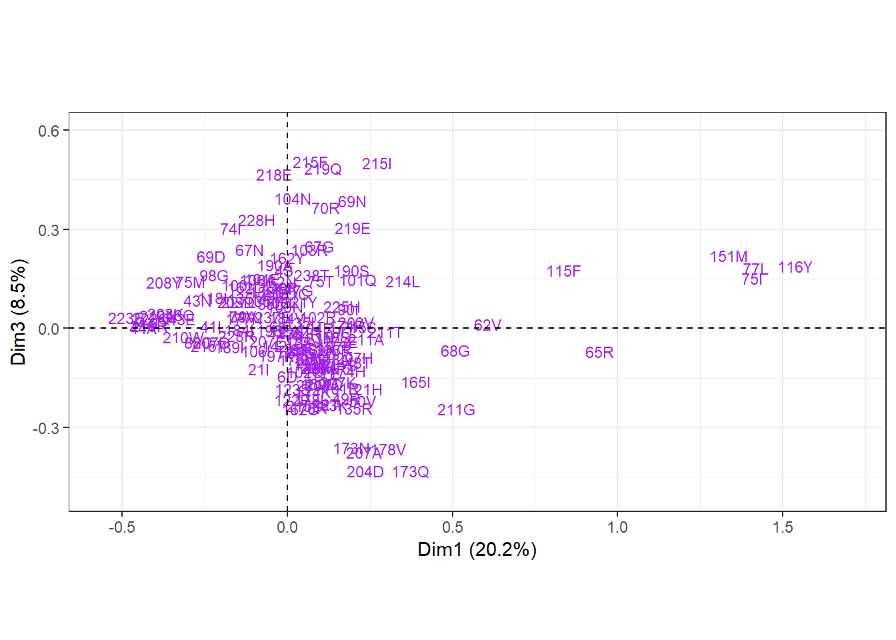

Chapter 3 Cross-references
3.1 Paquetes
library(pacman)
p_load("xkcd","showtext","sysfonts","tibble")3.1.1 Objetivos del capítulo
* Aprenda a explorar conjuntos de datos de forma rápida y flexible mediante visualización.
* Cree tramas hermosas e intuitivas para presentaciones y publicaciones científicas.
* Revise los conceptos básicos del trazado de base R.
* Comprender la lógica detrás de la de gráficos concepto
* Introducir ggplot2 _ ggplotfunción.
* Vea cómo trazar datos en una, dos o incluso de tres a cinco dimensiones, y explore las facetas.
* Cree gráficos "a lo largo del genoma" para datos de biología molecular (oa lo largo de otras secuencias, por ejemplo, péptidos).
* Discuta algunas de nuestras opciones de gráficos interactivos.3.2 Trazado base R
En el siguiente código, cuya salida se muestra en la Figura 3.2 , se utiliza para trazar datos de un ensayo de inmunoabsorción ligado a enzimas (ELISA). El ensayo se utilizó para cuantificar la actividad de la enzima desoxirribonucleasa (DNasa), que degrada el ADN.
head(DNase)## Run conc density
## 1 1 0.04882812 0.017
## 2 1 0.04882812 0.018
## 3 1 0.19531250 0.121
## 4 1 0.19531250 0.124
## 5 1 0.39062500 0.206
## 6 1 0.39062500 0.215plot(DNase$conc, DNase$density)
Gráfica de concentración frente a densidad para un ensayo ELISA de DNasa.
plot(DNase$conc, DNase$density,
ylab = attr(DNase, "labels")$y,
xlab = paste(attr(DNase, "labels")$x, attr(DNase, "units")$x),
pch = 3,
col = "blue")3.2.0.1 Pregunta 3.1
Anotar columnas de marcos de datos con “metadatos”, como descripciones más largas, unidades físicas, información de procedencia, etc., parece una función útil. ¿Es esta forma de almacenar dicha información, como en el DNaseobjeto, estandarizado o común en todo el ecosistema R? ¿Hay otras formas estandarizadas o comunes para hacer esto?


3.3 Un conjunto de datos de ejemplo
Se usará un conjunto de datos de microarrays de expresión génica que informa los transcriptomas de alrededor de 100 células individuales de embriones de ratón en diferentes momentos del desarrollo temprano. El embrión de mamífero comienza como una sola célula, el óvulo fertilizado. A través de ondas sincronizadas de divisiones celulares, el óvulo se multiplica en un grupo de células que al principio no muestran diferencias perceptibles entre ellas. Sin embargo, en algún momento, las células eligen diferentes linajes. Mediante una especificación cada vez mayor, surgen los diferentes tipos de células y tejidos que se necesitan para un organismo completo. El objetivo del experimento, fue investigar los cambios en la expresión génica asociados con el primer evento de ruptura de simetría en el embrión.
Más detalles del documento en Hiiragi 2013
p_load("Hiiragi2013")
data("x")
dim(Biobase::exprs(x))## [1] 45101 101Echando un vistazo a la información disponible sobre las muestras.
head(pData(x), n = 2)## File.name Embryonic.day Total.number.of.cells lineage genotype
## 1 E3.25 1_C32_IN E3.25 32 WT
## 2 E3.25 2_C32_IN E3.25 32 WT
## ScanDate sampleGroup sampleColour
## 1 E3.25 2011-03-16 E3.25 #CAB2D6
## 2 E3.25 2011-03-16 E3.25 #CAB2D6La información proporcionada es una combinación de información sobre las células (es decir, edad, tamaño y genotipo del embrión del que se obtuvieron) e información técnica (fecha de escaneo, nombre del archivo de datos sin procesar). Por convención, el tiempo de desarrollo del embrión de ratón se mide en días. Además, en el artículo los autores dividieron las células en 8 grupos biológicos ( sampleGroup), en función de la edad, el genotipo y el linaje, y definieron un esquema de colores para representar estos grupos ( sampleColour )
p_load("dplyr")
groups = group_by(pData(x), sampleGroup) %>%
summarise(n = n(), color = unique(sampleColour))
groups## # A tibble: 8 x 3
## sampleGroup n color
## <chr> <int> <chr>
## 1 E3.25 36 #CAB2D6
## 2 E3.25 (FGF4-KO) 17 #FDBF6F
## 3 E3.5 (EPI) 11 #A6CEE3
## 4 E3.5 (FGF4-KO) 8 #FF7F00
## 5 E3.5 (PE) 11 #B2DF8A
## 6 E4.5 (EPI) 4 #1F78B4
## 7 E4.5 (FGF4-KO) 10 #E31A1C
## 8 E4.5 (PE) 4 #33A02C## f(x) %>% g(y) %>% h
## h(g(f(x), y))3.4 ggplot2
p_load("ggplot2")
ggplot(DNase, aes(x = conc, y = density)) + geom_point()
Ahora pasemos a los datos de una sola celda del ratón y tracemos el número de muestras para cada uno de los 8 grupos usando el ggplotfunción.
ggplot(groups, aes(x = sampleGroup, y = n)) +
geom_bar(stat = "identity")
3.4.1 Estética
groupColor = setNames(groups$color, groups$sampleGroup)
ggplot(groups, aes(x = sampleGroup, y = n, fill = sampleGroup)) +
geom_bar(stat = "identity") +
scale_fill_manual(values = groupColor, name = "Groups") +
theme(axis.text.x = element_text(angle = 90, hjust = 1))
Además añadimos una llamada al scale_fill_manualfunción, que toma como entrada un mapa de colores, es decir, el mapeo de los valores posibles de una variable a los colores asociados, como un vector con nombre. Si hubiéramos omitido la llamada a scale_fill_manual, ggplot2 habría usado su elección de colores predeterminados. También agregamos una llamada a theme indicando que queremos la x -etiquetas de eje giradas 90 grados y alineadas a la derecha ( hjust; el valor predeterminado sería al centro).

3.5 La gramática de los gráficos
p_load("mouse4302.db")dftx = data.frame(t(Biobase::exprs(x)), pData(x))
ggplot( dftx, aes( x = X1426642_at, y = X1418765_at)) +
geom_point( shape = 1 ) +
geom_smooth( method = "loess" )## `geom_smooth()` using formula 'y ~ x'
Usando colores:
stopifnot(is(dftx, "data.frame"))
ggplot( dftx, aes( x = X1426642_at, y = X1418765_at )) +
geom_point( aes( color = sampleColour), shape = 19 ) +
geom_smooth( method = "loess" ) +
scale_color_discrete( guide = "none" )
3.5.0.1 Pregunta 3.3
¿Siempre tiene sentido visualizar los datos del diagrama de dispersión junto con una línea de regresión como en las Figuras 3.9 y 3.10 ?
Aparte, si queremos averiguar qué genes son el objetivo de estos identificadores de sonda y qué podrían hacer, podemos llamar:
p_load("mouse4302.db")
AnnotationDbi::select(mouse4302.db,
keys = c("1426642_at", "1418765_at"), keytype = "PROBEID",
columns = c("SYMBOL", "GENENAME"))## 'select()' returned 1:1 mapping between keys and columns## PROBEID SYMBOL GENENAME
## 1 1426642_at Fn1 fibronectin 1
## 2 1418765_at Timd2 T cell immunoglobulin and mucin domain containing 2dfx = as.data.frame(Biobase::exprs(x))
ggplot(dfx, aes(x = `20 E3.25`)) + geom_histogram(binwidth = 0.2)
3.5.0.2 Pregunta 3.4
¿Cuál es la diferencia entre los objetos dfxy dftx? ¿Por qué necesitábamos crearlos a ambos?
Volvamos al ejemplo anterior del gráfico de barras.
pb = ggplot(groups, aes(x = sampleGroup, y = n))class(pb)## [1] "gg" "ggplot"pb
Ahora podemos simplemente agregar los otros componentes de nuestra trama usando el “+”:
pb = pb + geom_bar(stat = "identity")
pb = pb + aes(fill = sampleGroup)
pb = pb + theme(axis.text.x = element_text(angle = 90, hjust = 1))
pb = pb + scale_fill_manual(values = groupColor, name = "Groups")
pb
pb.polar = pb + coord_polar() +
theme(axis.text.x = element_text(angle = 0, hjust = 1),
axis.text.y = element_blank(),
axis.ticks = element_blank()) +
xlab("") + ylab("")
pb.polar
3.6 Visualización de datos en 1D
selectedProbes = c( Fgf4 = "1420085_at", Gata4 = "1418863_at",
Gata6 = "1425463_at", Sox2 = "1416967_at")p_load("reshape2")
genes = melt(Biobase::exprs(x)[selectedProbes, ],
varnames = c("probe", "sample"))Por si acaso, también agregamos una columna que proporciona el símbolo del gen junto con los identificadores de la sonda.
genes$gene =
names(selectedProbes)[match(genes$probe, selectedProbes)]
head(genes)## probe sample value gene
## 1 1420085_at 1 E3.25 3.027715 Fgf4
## 2 1418863_at 1 E3.25 4.843137 Gata4
## 3 1425463_at 1 E3.25 5.500618 Gata6
## 4 1416967_at 1 E3.25 1.731217 Sox2
## 5 1420085_at 2 E3.25 9.293016 Fgf4
## 6 1418863_at 2 E3.25 5.530016 Gata43.6.1 Diagramas de barras
ggplot(genes, aes(x = gene, y = value)) +
stat_summary(fun = mean, geom = "bar")
p_load("Hmisc")
ggplot(genes, aes( x = gene, y = value, fill = gene)) +
stat_summary(fun = mean, geom = "bar") +
stat_summary(fun.data = mean_cl_normal, geom = "errorbar",
width = 0.25)
Gráficos de barras con barras de error que indican el error estándar de la media.
3.6.2 Diagramas de caja
p = ggplot(genes, aes( x = gene, y = value, fill = gene))
p + geom_boxplot()
p + geom_dotplot(binaxis = "y", binwidth = 1/6,
stackdir = "center", stackratio = 0.75,
aes(color = gene))p_load("ggbeeswarm")
p + geom_beeswarm(aes(color = gene))3.6.3 violín
p + geom_violin() ### Diagramas de densidad
ggplot(genes, aes( x = value, color = gene)) + geom_density()
p_load("ggridges")
ggplot(genes, aes(x = value, y = gene, fill = gene)) +
geom_density_ridges()## Picking joint bandwidth of 0.729
3.6.4 Gráficos ECDF
simdata = rnorm(70)
tibble(index = seq(along = simdata),
sx = sort(simdata)) %>%
ggplot(aes(x = sx, y = index)) + geom_step()
ggplot(genes, aes( x = value, color = gene)) + stat_ecdf()
Funciones de distribución acumulativa empírica (ECDF).
3.6.5 El efecto de las transformaciones sobre las densidades
ggplot(dfx, aes(x = `64 E4.5 (EPI)`)) + geom_histogram(bins = 100)ggplot(dfx, aes(x = 2 ^ `64 E4.5 (EPI)`)) +
geom_histogram(binwidth = 20) + xlim(0, 1500)## Warning: Removed 1457 rows containing non-finite values (stat_bin).## Warning: Removed 2 rows containing missing values (geom_bar).3.7 Visualización de datos en 2D: diagramas de dispersión
scp = ggplot(dfx, aes(x = `59 E4.5 (PE)` ,
y = `92 E4.5 (FGF4-KO)`))
scp + geom_point()
scp + geom_point(alpha = 0.1)
3.7.1 Representada como un gráfico de contorno de la estimación de densidad 2D.
scp + geom_density2d()
scp + geom_density2d(h = 0.5, bins = 60)p_load("RColorBrewer")
colorscale = scale_fill_gradientn(
colors = rev(brewer.pal(9, "YlGnBu")),
values = c(0, exp(seq(-5, 0, length.out = 100))))
scp + stat_density2d(h = 0.5, bins = 60,
aes( fill = ..level..), geom = "polygon") +
colorscale + coord_fixed()
scp + geom_hex() + coord_fixed()
scp + geom_hex(binwidth = c(0.2, 0.2)) + colorscale +
coord_fixed()3.7.2 Trazar formas
p_load("ggthemes")
sunsp = tibble(year = time(sunspot.year),
number = as.numeric(sunspot.year))
sp = ggplot(sunsp, aes(x = year, y = number)) + geom_line()
sp## Don't know how to automatically pick scale for object of type ts. Defaulting to continuous.
ratio = with(sunsp, bank_slopes(year, number))
sp + coord_fixed(ratio = ratio)## Don't know how to automatically pick scale for object of type ts. Defaulting to continuous.3.8 Visualización de más de dos dimensiones
3.8.1 Facetado
p_load("magrittr")
dftx$lineage %<>% sub("^$", "no", .)
dftx$lineage %<>% factor(levels = c("no", "EPI", "PE", "FGF4-KO"))
ggplot(dftx, aes( x = X1426642_at, y = X1418765_at)) +
geom_point() + facet_grid( . ~ lineage )
ggplot( dftx,
aes( x = X1426642_at, y = X1418765_at)) + geom_point() +
facet_grid( Embryonic.day ~ lineage )ggplot(mutate(dftx, Tdgf1 = cut(X1450989_at, breaks = 4)),
aes( x = X1426642_at, y = X1418765_at)) + geom_point() +
facet_wrap( ~ Tdgf1, ncol = 2 )
3.8.2 Gráficos interactivos
p_load("plotly")
plot_ly(economics, x = ~ date, y = ~ unemploy / pop)## No trace type specified:
## Based on info supplied, a 'scatter' trace seems appropriate.
## Read more about this trace type -> https://plotly.com/r/reference/#scatter## No scatter mode specifed:
## Setting the mode to markers
## Read more about this attribute -> https://plotly.com/r/reference/#scatter-modedata("volcano")
volcanoData = list(
x = 10 * seq_len(nrow(volcano)),
y = 10 * seq_len(ncol(volcano)),
z = volcano,
col = terrain.colors(500)[cut(volcano, breaks = 500)]
)3.9 Color
p_load("rgl")
par(mai = rep(0,4))
pie(rep(1, 8), col=1:8)## pie(rep(1, 8), col=1:8)#display.brewer.all()
head(brewer.pal.info)## maxcolors category colorblind
## BrBG 11 div TRUE
## PiYG 11 div TRUE
## PRGn 11 div TRUE
## PuOr 11 div TRUE
## RdBu 11 div TRUE
## RdGy 11 div FALSEtable(brewer.pal.info$category)##
## div qual seq
## 9 8 18Las paletas se dividen en tres categorías:
cualitativo: para propiedades categóricas que no tienen un orden intrínseco. los Pairedpalette admite hasta 6 categorías, cada una de las cuales se divide en dos subcategorías, como antes y después , con y sin tratamiento, etc.
secuencial: para propiedades cuantitativas que van de menor a mayor
divergente: para propiedades cuantitativas para las que existe un punto medio natural o valor neutral, y cuyo valor puede desviarse tanto hacia arriba como hacia abajo.brewer.pal(4, "RdYlGn")## [1] "#D7191C" "#FDAE61" "#A6D96A" "#1A9641"mypalette = colorRampPalette(
c("darkorange3", "white","darkblue")
)(100)
head(mypalette)## [1] "#CD6600" "#CE6905" "#CF6C0A" "#D06F0F" "#D17214" "#D27519"par(mai = rep(0.1, 4))
image(matrix(1:100, nrow = 100, ncol = 10), col = mypalette,
xaxt = "n", yaxt = "n", useRaster = TRUE)
3.10 Mapas de calor
p_load("pheatmap")
topGenes = order(rowVars(Biobase::exprs(x)), decreasing = TRUE)[1:500]
rowCenter = function(x) { x - rowMeans(x) }
pheatmap( rowCenter(Biobase::exprs(x)[ topGenes, ] ),
show_rownames = FALSE, show_colnames = FALSE,
breaks = seq(-5, +5, length = 101),
annotation_col =
pData(x)[, c("sampleGroup", "Embryonic.day", "ScanDate") ],
annotation_colors = list(
sampleGroup = groupColor,
genotype = c(`FGF4-KO` = "chocolate1", `WT` = "azure2"),
Embryonic.day = setNames(brewer.pal(9, "Blues")[c(3, 6, 9)],
c("E3.25", "E3.5", "E4.5")),
ScanDate = setNames(brewer.pal(nlevels(x$ScanDate), "YlGn"),
levels(x$ScanDate))
),
cutree_rows = 4
)groupColor[1]## E3.25
## "#CAB2D6"hexvals = sapply(1:3, function(i) substr(groupColor[1], i*2, i*2+1))
decvals = strtoi(paste0("0x", hexvals))p_load("colorspace","grid")
plothcl = function(h, c, l, what, x0 = 0.5, y0 = 0.5, default.units = "npc", ...) {
switch(what,
"c" = {
stopifnot(length(l)==1)
n = length(c)
},
"l" = {
stopifnot(length(c)==1)
n = length(l)
},
stop("Sapperlot"))
cr = seq(0.1, 0.5, length = n+1)
dr = 0.05 / n
for (j in seq_len(n)) {
r = c(cr[j]+dr, cr[j+1]-dr)
for(i in 1:(length(h)-1)){
phi = seq(h[i], h[i+1], by=1)/180*pi
px = x0 + c(r[1]*cos(phi), r[2]*rev(cos(phi)))
py = y0 + c(r[1]*sin(phi), r[2]*rev(sin(phi)))
mycol = switch(what,
"c" = hcl(h=mean(h[i+(0:1)]), c=c[j], l=l),
"l" = hcl(h=mean(h[i+(0:1)]), c=c, l=l[j]))
grid.polygon(px, py, gp=gpar(col=mycol, fill=mycol),
default.units=default.units,...)
}
}
}plothcl( h = seq(0, 360, by=3), c = seq(5, 75, by=10), l = 75, what="c")
grid.newpage()
plothcl( h = seq(0, 360, by=3), c = 55, l = seq(20, 100, by=10), what="l")3.11 Transformaciones de datos
gg = ggplot(tibble(A = Biobase::exprs(x)[, 1], M = rnorm(length(A))),
aes(y = M))
gg + geom_point(aes(x = A), size = 0.2)
gg + geom_point(aes(x = rank(A)), size = 0.2)3.12 Símbolos matemáticos y otras fuentes
volume = function(rho, nu)
pi^(nu/2) * rho^nu / gamma(nu/2+1)
ggplot(tibble(nu = 1:15,
Omega = volume(1, nu)), aes(x = nu, y = Omega)) +
geom_line() +
xlab(expression(nu)) + ylab(expression(Omega)) +
geom_text(label =
"Omega(rho,nu)==frac(pi^frac(nu,2)~rho^nu, Gamma(frac(nu,2)+1))",
parse = TRUE, x = 6, y = 1.5)
ggplot(genes, aes( x = value, color = gene)) + stat_ecdf() +
theme(text = element_text(family = "Times"))## Warning in grid.Call(C_stringMetric, as.graphicsAnnot(x$label)): font family not
## found in Windows font database
## Warning in grid.Call(C_stringMetric, as.graphicsAnnot(x$label)): font family not
## found in Windows font database## Warning in grid.Call(C_textBounds, as.graphicsAnnot(x$label), x$x, x$y, : font
## family not found in Windows font database
## Warning in grid.Call(C_textBounds, as.graphicsAnnot(x$label), x$x, x$y, : font
## family not found in Windows font database
## Warning in grid.Call(C_textBounds, as.graphicsAnnot(x$label), x$x, x$y, : font
## family not found in Windows font database
## Warning in grid.Call(C_textBounds, as.graphicsAnnot(x$label), x$x, x$y, : font
## family not found in Windows font database
## Warning in grid.Call(C_textBounds, as.graphicsAnnot(x$label), x$x, x$y, : font
## family not found in Windows font database
## Warning in grid.Call(C_textBounds, as.graphicsAnnot(x$label), x$x, x$y, : font
## family not found in Windows font database
## Warning in grid.Call(C_textBounds, as.graphicsAnnot(x$label), x$x, x$y, : font
## family not found in Windows font database
## Warning in grid.Call(C_textBounds, as.graphicsAnnot(x$label), x$x, x$y, : font
## family not found in Windows font database## Warning in grid.Call.graphics(C_text, as.graphicsAnnot(x$label), x$x, x$y, :
## font family not found in Windows font database## Warning in grid.Call(C_textBounds, as.graphicsAnnot(x$label), x$x, x$y, : font
## family not found in Windows font database
## Warning in grid.Call(C_textBounds, as.graphicsAnnot(x$label), x$x, x$y, : font
## family not found in Windows font database
ggplot(genes, aes( x = value, color = gene)) + stat_ecdf() + theme(text = element_text(family = "Bauhaus 93"))## Warning in grid.Call(C_stringMetric, as.graphicsAnnot(x$label)): font family not
## found in Windows font database## Warning in grid.Call(C_stringMetric, as.graphicsAnnot(x$label)): font family not
## found in Windows font database## Warning in grid.Call(C_textBounds, as.graphicsAnnot(x$label), x$x, x$y, : font
## family not found in Windows font database
## Warning in grid.Call(C_textBounds, as.graphicsAnnot(x$label), x$x, x$y, : font
## family not found in Windows font database
## Warning in grid.Call(C_textBounds, as.graphicsAnnot(x$label), x$x, x$y, : font
## family not found in Windows font database
## Warning in grid.Call(C_textBounds, as.graphicsAnnot(x$label), x$x, x$y, : font
## family not found in Windows font database
## Warning in grid.Call(C_textBounds, as.graphicsAnnot(x$label), x$x, x$y, : font
## family not found in Windows font database
## Warning in grid.Call(C_textBounds, as.graphicsAnnot(x$label), x$x, x$y, : font
## family not found in Windows font database
## Warning in grid.Call(C_textBounds, as.graphicsAnnot(x$label), x$x, x$y, : font
## family not found in Windows font database
## Warning in grid.Call(C_textBounds, as.graphicsAnnot(x$label), x$x, x$y, : font
## family not found in Windows font database## Warning in grid.Call.graphics(C_text, as.graphicsAnnot(x$label), x$x, x$y, :
## font family not found in Windows font database## Warning in grid.Call(C_textBounds, as.graphicsAnnot(x$label), x$x, x$y, : font
## family not found in Windows font database
## Warning in grid.Call(C_textBounds, as.graphicsAnnot(x$label), x$x, x$y, : font
## family not found in Windows font database
3.13 Datos genómicos
p_load("ggbio")
data("hg19IdeogramCyto", package = "biovizBase")
plotIdeogram(hg19IdeogramCyto, subchr = "chr1")
p_load("GenomicRanges")
data("darned_hg19_subset500", package = "biovizBase")
autoplot(darned_hg19_subset500, layout = "karyogram",
aes(color = exReg, fill = exReg))
p_load("biovizBase")
data("ideoCyto", package = "biovizBase")
dn = darned_hg19_subset500
seqlengths(dn) = seqlengths(ideoCyto$hg19)[names(seqlengths(dn))]
dn = keepSeqlevels(dn, paste0("chr", c(1:22, "X")))
autoplot(dn, layout = "karyogram", aes(color = exReg, fill = exReg))## Scale for 'x' is already present. Adding another scale for 'x', which will
## replace the existing scale.
## Scale for 'x' is already present. Adding another scale for 'x', which will
## replace the existing scale.